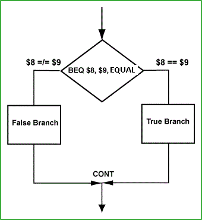

Yes.

A two-way decision (alternation) is written in assembly language using both a conditional branch and a jump instruction. Look at this example carefully! It shows how a basic control structure is built out of small assembly instructions.
ori $8,$0,7 # load values into
ori $9,$0,12 # $8 and $9
#
beq $8,$9,equal # branch if equal
sll $0,$0,0 # branch delay slot
... #
... # false branch
... #
j cont
sll $0,$0,0 # branch delay slot
equal: ... #
... # true branch
... #
cont: add $10,$10,$11 # always executed
Of course, any of the conditional branch instructions may
be used in the place of beq to test different contitions.
The assembly language program roughly corresponds to this C fragment:
int a=7, b=12;
if ( a==b )
... /* true branch */
else
... /* false branch */
A compiler outputs the assembly code that corresponds to the C code.
The branches in the assembly code are not in the same order as in the C. If you want the "true" branch to come first and the "false" branch to come second in the assembly code, use a different branch instruction.
In an if-then-else structure, the two branches of control
always come together at the first statement outside of the structure
(the statement at cont (continue) in the example).
Is this necessarily so in assembly language?